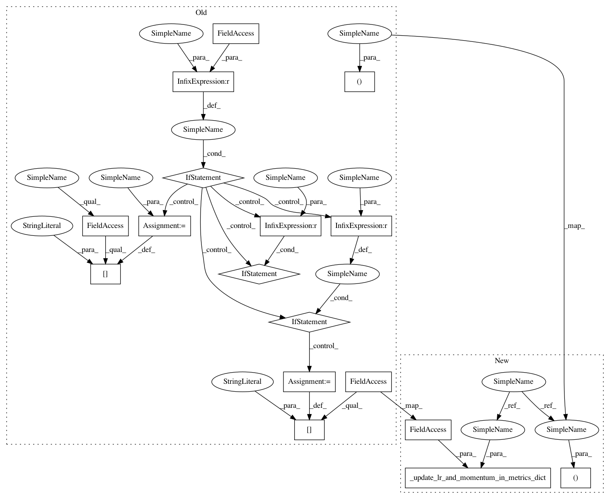

92ec6f9f8790d0176fbafbf711d5a541b5c09e60,catalyst/callbacks/scheduler.py,SchedulerCallback,step_epoch,#SchedulerCallback#Any#,147
Before Change
runner: current runner
reduced_metric = runner.valid_metrics[self.reduced_metric]
lr, momentum = self._scheduler_step(
scheduler=self._scheduler, reduced_metric=reduced_metric
)
if self.scheduler_key is not None:
runner.epoch_metrics[f"lr/{self.scheduler_key}"] = lr
if momentum is not None:
runner.epoch_metrics[
f"momentum/{self.scheduler_key}"
] = momentum
else:
runner.epoch_metrics["lr"] = lr
if momentum is not None:
runner.epoch_metrics["momentum"] = momentum
def on_stage_start(self, runner: "IRunner") -> None:
Stage start hook.
Args:
After Change
runner: current runner
reduced_metric = runner.valid_metrics[self.reduced_metric]
lr_list, momentum_list = self._scheduler_step(
scheduler=self._scheduler, reduced_metric=reduced_metric
)
self._update_lr_and_momentum_in_metrics_dict(
runner.epoch_metrics, lr_list, momentum_list
)
def on_stage_start(self, runner: "IRunner") -> None:
Stage start hook.
In pattern: SUPERPATTERN
Frequency: 3
Non-data size: 17
Instances
Project Name: catalyst-team/catalyst
Commit Name: 92ec6f9f8790d0176fbafbf711d5a541b5c09e60
Time: 2020-12-04
Author: mr.and.kul@gmail.com
File Name: catalyst/callbacks/scheduler.py
Class Name: SchedulerCallback
Method Name: step_epoch
Project Name: Scitator/catalyst
Commit Name: 92ec6f9f8790d0176fbafbf711d5a541b5c09e60
Time: 2020-12-04
Author: mr.and.kul@gmail.com
File Name: catalyst/callbacks/scheduler.py
Class Name: SchedulerCallback
Method Name: step_epoch
Project Name: Scitator/catalyst
Commit Name: 92ec6f9f8790d0176fbafbf711d5a541b5c09e60
Time: 2020-12-04
Author: mr.and.kul@gmail.com
File Name: catalyst/callbacks/scheduler.py
Class Name: SchedulerCallback
Method Name: step_batch